GÖBEKLI TEPE
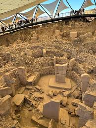
Introduction
Known as the world’s oldest temple and dubbed the “zero point of history,” Gobeklitepe is located in the central Haliliye district of Sanliurfa, approximately 18 kilometers (11 miles) from the city center near the rural Orencik neighborhood.
The site was first identified during surface surveys in 1963, and the most concrete evidence emerged in 1986 when a farmer discovered a statue while plowing his field. Official excavations began in 1995 under the auspices of the Culture and Tourism Ministry’s Directorate General of Cultural Heritage and Museums.
Göbekli Tepe dates back to approximately 9600 BC, 7000 years before the pyramids and about 6000 years before Sumerian writing.
The American and Turkish team had judged the workmanship on the pillars to be too fine—too advanced, too sophisticated—to have been produced by Stone Age hunter-gatherers. In their opinion, despite the presence of worked flints lying alongside the limestone fragments, Göbekli Tepe was nothing more than an abandoned medieval cemetery and therefore of no prehistoric interest whatsoever.
Graham mentioned that the site was deliberately buried, and this is what led him to describe it as a time capsule built to deliver a message to the future. He added that the walls were constructed in a way that made burial easier, and even the location chosen — beneath the mound — supports this idea, similar to the giant tombs in Western Europe that were buried and found beside a mound.
Literary
Some researchers propose that Gobekli Tepe represents Noah’s Altar, a sacred site tied to the flood narrative
The intricate symbolism and elaborate arrangements at Gobekli Tepe indicate that it was likely a site of religious and ritual importance. The carvings of animals, the arrangement of the stone pillars, and the spatial layout of the enclosures allude to a complex belief system and ceremonial practices. The presence of large communal structures suggests that Gobekli Tepe was a gathering place for communal rituals, where people sought to connect with the divine.
There are two major claims that those who think Gobekli Tepe had celestial connections points. One suggests that the site was aligned with the night sky, particularly the star Sirius, because the local people worshiped the star like other cultures in the region did thousands of years later. Another claims that carvings at Gobekli Tepe record a comet impact that hit Earth at the end of the Ice Age.
Some modern legends link the site to being the first place on Earth built for the worship of "gods" or "celestial beings," as the inscriptions mention images of animals and creatures that may be more mythical than natural symbols.
There are semi-mythical accounts that say Göbekli Tepe was not just a temple, but a cosmic gateway connecting humans to other worlds or the stars. Some amateur researchers have likened it to a "Stargate" due to its possible astronomical alignment.
Some link the site to the legend of Noah's Flood, saying that Göbekli Tepe may have been a ritual center for pre-Flood humans, and was then deliberately buried to hide it from later civilizations.
In some folk legends, it is said that the site's massive pillars could not have been built by ordinary humans, but were built by Titans or giants who lived in ancient times (similar to the "Rephaim" and "Nephilim" in ancient mythology).
The animal carvings on the columns, such as snakes, scorpions, and lions, have been interpreted by some as "magic talismans" to protect the temple or to unlock supernatural powers, making Göbekli Tepe sometimes seen as a "magic temple."
The great mystery is that the site was completely buried under sand and stones thousands of years ago. Some legends say that its builders concealed it to protect it from a cosmic catastrophe or to keep it secret until a later time, as if leaving it as a "message for future generations."
There is a mythological theory that considers Göbekli Tepe to be humanity's first celestial city, where priests and sages gathered to communicate with the sky and the stars, before the emergence of any other civilization such as Sumer or Egypt.
In some spiritual interpretations, Göbekli Tepe is considered a remnant of a lost civilization (such as Atlantis or Lemuria) or a center of "secret wisdom" before the collapse of ancient civilizations.
Popular among some Arab writers and bloggers on the Internet, it is said that Adam or his sons (Abel and Cain) were the first to establish this site for worship and offering sacrifices. Source: Arab and religious forums and some non-academic articles on the Internet.
The circular columns are believed to have been a place for sacrificial offerings, leading some to associate them with the sacrifice of Abel and his murder by Cain. This interpretation has spread in popular articles and discussions on platforms such as Reddit (r/Christianity), where it is suggested that Göbekli Tepe may represent the first "religious altar."
Some Christian bloggers (such as Biblical History and Evidence) have linked the site of Göbekli Tepe to the nearby Karacadağ as the location of the biblical Garden of Eden. Here, Göbekli Tepe is supposed to be the "original place" from which Adam was placed in the garden.
They believe that Göbekli Tepe is not just a primitive temple, but a sacred edifice built before the Flood of Noah. Because the Flood was a massive cosmic catastrophe (mentioned in the Torah, the Quran, and the Epic of Gilgamesh), the site survived because the temple builders deliberately covered it with dirt before the Flood. It was as if they wanted to hide and protect it, or leave a message for humanity to come after the disaster.
Some metaphysical scholars believe that the stone circles at Göbekli Tepe were not just temples, but stargates. They believe they were a means of communication with the universe or "other worlds," directly connected to the stars. In particular, they associate the site with the constellation Orion, a constellation also associated with the Egyptian pyramids and many ancient myths.
The bull and the scorpion carved on the columns are interpreted as astronomical symbols, representing the celestial signs. The rest of the animals (such as birds, foxes, and even strange-looking creatures) may refer to cosmic symbols or creatures from “other worlds.”
The massive stone pillars are said to have been not just religious symbols, but evidence of bloody rituals. Some accounts claim that people offered human or animal sacrifices to gods or cosmic powers. Blood was poured and allowed to run around the bases of the pillars as part of a symbolic ritual of fertility or connection to the other world.Some metaphysical or folk researchers link this to the idea of worshipping mysterious forces or "ancient gods" who required blood to replenish energy.
Rand Flem-Ath is an alternative history researcher, known for his books on Atlantis and theories about ancient weather and pre-flood civilizations. In his works, he suggests that some ancient archaeological sites, such as Göbekli Tepe, may be linked to advanced civilizations that existed before the flood described in religious myths, considering these sites as bearing traces of knowledge and technologies that humans later lost.
Moreover, this whole area, Mount Ararat and Göbekli Tepe very much included, formed the heartland of historic Armenia, the direct descendant of the Biblical Kingdom of Ararat whose inhabitants saw—and still today see—themselves as “the Peoples of Ararat.”13 Written in the fifth century AD, Moses Khorenatsi’s influential History of the Armenians attributed the founding of the nation to the patriarch Haik, who, it was said, was the great-great-great-grandson of Noah himself and thus in the close lineage of the flood survivors who emerged from the Ark.14 Indeed it is because of Haik that even in the twenty-first century Armenians still refer to themselves as Hai, and to their land as Haiastan.15 They see it simply as a tragedy of history that so much of this land, again including Göbekli Tepe and Mount Ararat, is now in the possession of the Republic of Turkey, following the Armenian genocide of 1915–23 in which more than one million ethnic Armenians are believed to have been killed by Turkish forces.
Nationalistic feelings still run high in the communities of the Armenian diaspora scattered around the world and in the tiny rump of historic Armenia that forms the Armenian Republic today. These tensions have not left Göbekli Tepe untouched, and many Armenians are outraged that Turkey claims this uniquely important site as its own heritage as though the ancient Armenian connection did not even exist. A few minutes’ search on the internet using the keyword “Portasar,” the former Armenian name of Göbekli Tepe, will confirm this. I’ll give a single example here, a YouTube video entitled “Turkey Presents Armenian Portasar as Turkish Göbekli Tepe.”17 Among the comments, fairly typical of the remarks made by many viewers, we read:" This is the way I look at Portasar (Göbekli Tepe). These people deliberately buried a sacred temple. They did this in the anticipation of having it discovered many years in the future. They believed in reincarnation. Those people who built Portasar (Göbekli Tepe) are here among the Armenians. Their spirits have transcended into the Armenian people of today. When you pass on something in your family you want to make sure that it goes to only that family member and no one else. Portasar and those lands will be returned back to the Armenians in accordance with the laws of nature"
The evidence of the Mesopotamian inscriptions, and of Göbekli Tepe to which , is that the mountain lands of ancient Armenia and eastern Turkey were among the primal wildernesses to which the civilizers made their way after the flood. But the testimony of Edfu is that they also came to the Nile flowing in its fertile valley through the deserts of Egypt
Klaus Schmidt believes that Göbekli Tepe had a direct impact on the myths and legends regarding the Anunnaki, and that the site could be the role model for the original Duku mound. Indeed, he goes further, as Andrew points out , by hinting at a connection between Göbekli Tepe and biblical traditions concerning the Garden of Eden, and perhaps even the very human angels of Hebrew mythological tradition known as the Watchers.
As Andrew points out, at Göbekli Tepe, as well as at the nine thousandyear-old Neolithic city of Çatal Höyük in southern-central Turkey, there are abstract representations of vultures with articulated legs. Either they are shamans adorned as birds or bird spirits with anthropomorphic features.
an ancient Hebrew work known as the book of Jubilees, which also tells the story of the Watchers, relates how Cainan, the legendary founder of Harran, uncovered an inscription carved on a stone stela. When translated it was found to contain the antediluvian science of astrology as taught by the Watchers. This knowledge went on to form the basis of the beliefs of the Chaldeans; that is, the pagans of Harran, whose progenitor is said to have been Cainan’s father, Arphaxad, the son of Shem and grandson of Noah. 7The name Arphaxad simply means “Ur of the Chaldees,” taking us back to the site of Abraham’s birthplace in nearby Şanlıurfa.Was the stone stela found by Cainan and said to reveal the astrological knowledge of the Watchers a reference to the beautifully carved T-shaped pillars found at nearby Göbekli Tepe, seem to reflect a profound knowledge of the starry heavens during the epoch of their construction? Was this the true source of the Harranites’ starry wisdom, adopted from their forerunners, who inhabited Tell Idris and other similar early Neolithic settlements on the Harran Plain as much as ten thousand years ago?
Further linking the Harran region with the Watchers is the belief that the city of Şanlıurfa, where a settlement site belonging to the same culture responsible for Göbekli Tepe was uncovered near Abraham’s birthplace during the 1990s, was founded either by the patriarch Enoch or by “Orhay son of Hewya,” with hewya meaning “serpent.” Almost certainly, this serpentine founder of the city is an allusion to the Watchers, who are themselves occasionally described as Serpents . Was it here, in Şanlıurfa, that Enoch met with the two Watchers who took him on a tour of the Seven Heavens, a mountainous realm that included the Garden of Righteousness?
one Syrian chronicler wrote that the city of Şanlıurfa, ancient Edessa, was founded by “Orhay son of Hewya,” the “Serpent,” a clear allusion to the Watchers of the book of Enoch. Remember, Göbekli Tepe is just 8 miles (13 kilometers) away from the center of Şanlıurfa
The Swiderians, who arrived in eastern Anatolia during the Younger Dryas around 10,000 BC, carried beliefs and practices influenced by earlier cultures such as the Solutreans of western and central Europe, the magical traditions of the Kostenki-Streletskaya people of Russia, and the Zarzians, who had taken a similar route thousands of years before. These interconnected cultural influences eventually came together and contributed to the construction of Göbekli Tepe between 9500 and 8000 BC.
It was believed that King Solomon made the Cin go to work for him and that they “did what an ordinary human being could not do.” 24 Both the Peri and Cin were able to carry heavy objects, build great monuments, and perform other grand feats, and it was put to me by my Kurdish contact, Hakan Dalkus, who was brought up in a small village in the foothills of the Eastern Taurus Mountains, that “maybe Göbekli Tepe was built by them. Or some people then or later believed so. It makes such a place sacred too. While for us Genies, [that is, Cin] mostly stand for bad characters to be feared, Peri is the opposite.
It is possible that the post-Zarzian inhabitants of the Eastern Taurus and Zagros Mountains provided the expertise needed to help establish cult centers such as Halan Cheme and even Göbekli Tepe, suggesting that these structures themselves were in fact the product of indigenous cultures, under the control of a powerful elite of Suedarian origin.
Other cultures from more distant regions may have been involved in the creation process. For example, if the Nilotic peoples of Egypt, Sudan, and even the Sahara traded with the Natufians, which seems likely from a number of fragmentary evidences now emerging from Paleolithic sites in the Levantine corridor, it remains highly likely that groups or individuals from the Nile Valley played a role in the emergence of Göbekli Tepe.
Interestingly, the Sabaeans, the pagan inhabitants of Harran, were said to have been “worshippers of fire called Magi” and claimed to be keepers of the mysterious “book of Seth,” because their founder was one “Sabius, a son of Seth.” 18 Moreover, they asserted that “we acknowledge the religion of Seth, Idris (Enoch) and Noah.” 19 So could the original book or books of Seth have been carved stone pillars, like those being uncovered today at nearby Göbekli Tepe? Were the twelve Magi that perpetually guarded the book or books of Seth an echo, however slight, of the rings of twelve anthropomorphic pillars erected at Göbekli Tepe some 11,500 years ago? Could these rings of stone reflect much later traditions regarding the “children of Seth” preserving the secrets of Adam in written form? If so, then who or what might the twin central pillars have come to represent in Jewish, Christian, and Gnostic tradition?
features
The area surrounding the site is considered one of the earliest centers of agriculture in the world, with evidence of wild einkorn wheat cultivation found nearby. This discovery led some scholars to link early religious rituals with the emergence of the agricultural revolution. Although no houses or villages were discovered directly attached to the site, small settlements of circular mud-brick houses were found a few kilometers away, suggesting that people may have lived at a distance and visited the site specifically for rituals. Nearby, stone quarries were discovered, from which the massive pillars were extracted. In southeastern Turkey, similar sites such as Karahan Tepe and Nevali Çori were uncovered, featuring the same T-shaped pillars but on a smaller scale, reflecting the spread of this cultural pattern across the region.
Gobekli Tepe consists of several circular enclosures, each with an average diameter of 10 to 30 meters. These enclosures are surrounded by massive stone walls, some reaching up to five meters in height. The entrances to these enclosures are marked by monumental stone pillars, emphasizing the importance and ceremonial nature of the site. The circular shape of the enclosures suggests a deliberate architectural choice, perhaps symbolizing a connection to celestial bodies or the cyclical nature of life.
Archaeologists have found T-shaped obelisks from the Neolithic era towering three to six meters (10-20 feet) high and weighing 40-60 tons
Most of the pillars feature ornate carvings of animals, like snakes, foxes, wild boars, birds, and other critters.
Although many of the pillars focus on just a single animal, other carvings combine their art into a more complex motif. Gobekli Tepe's Pillar 43 is the most prominent of these. This captivating pillar appears to feature a large vulture, other birds, a scorpion, and additional abstract symbols.
Scientists working at Gobelekingepe also seem to confirm claims that Gobekli Tepe was, among other things, an observatory for monitoring the night sky. One of its pillars seems to have served as a memorial devastating event of meteor hitting the Earth.
Urfa man. The oldest known statue of a person on Earth. Found near Gobekli Tepe, South East Turkey. This 1.8 metre statue carved out of limestone is considered to be almost 12,000 years old.
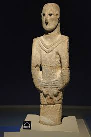
Inscriptions
Urfa Man
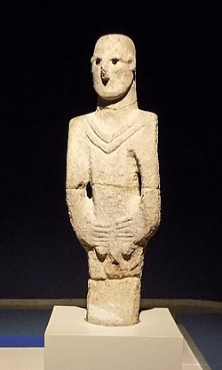
The statue is nearly 1.90 meters tall.The eyes form deep holes, in which are set segments of black obsidian.It features a V-shaped collar or necklace.The hands are clasped in front, covering the genitals.The statue is thought to date to around 9000 BC, and is often claimed to be the oldest known statue in the world
The body is covered with clothing or simple decorations, but appears in a standing position.It is the oldest standing human statue known to history.
It is believed to be a funerary or spiritual statue, representing a figure of religious status or a tribal leader.
It may be related to ancestor or spirit worship rituals, i.e. similar to the symbolic character at Göbekli Tepe.
Scholars suggest that it reflects the early beginnings of symbolic art and human abstraction.
Some alternative researchers see it as a symbol of advanced human consciousness, indicating that humans of that era possessed advanced symbolic and philosophical knowledge.
Some scholars suggest that the absence of a mouth and nose may symbolize divine destiny or spiritual power rather than just an ordinary statue.
There are bloggers who believe that the statue represented the first human to possess supernatural powers or cosmic knowledge.
Some see it as a ritual guardian or gateway to spiritual energy, and associate it with myths about spirits and cosmic energy.
vulture
The etymology of vultur is not clear and probably derives from Latin vellere, meaning “to fleece, to rip”, but the 6th cent. scholar Isidorus from Sevilla gives another explanation and lets derive vultur from volatus tardus, “slow flight”
The etymology of vultur is not clear and probably derives from Latin vellere, meaning “to fleece, to rip”, but the 6th cent. scholar Isidorus from Sevilla gives another explanation and lets derive vultur from volatus tardus, “slow flight”

For this reason they have been mostly seen as natural purifiers and considered sacred by many civilizations and, even though they were included into the list of the animals you shouldn’t eat according to the purification laws written in the fifth book of the Bible, their symbolic dimension, associated to the idea of purification, is present in many myths, religions, burial praxis of ancient civilizations and still remains in some religions today in the sky or celestial burials, for example, still practised by Tibetan Buddhists and by Zoroastrians in Iran, India and Tibet, where human corpses are offered to vultures, which are considered the equivalent of angels.
Ancient mysteries writer Andrew Collins and chartered engineer Rodney Hale take a fresh look at this subject, realising the key to understanding Pillar 43's astronomical nature is the ball over the left wing of the principal vulture shown among its carved relief. Almost certainly it represents the northern celestial pole, long seen in shamanic tradition as the "hole in the sky" through which human souls could access the Upper World. With this knowledge, it becomes clear that the pillar's carved relief is a multi-layered signboard created to aid the soul's journey from its physical environment to the land of the dead.
Müslüm Ercan describes the scene as a sky burial in which the ‘soul’, sometimes symbolized as a head, is figuratively carried up to the sky world, basing his view, it appears, on painted examples found at the site of Çatalhöyük. Although there is outline of resemblance between these separate patterns, the vulture stone embeds a far more complex impression.

These include a prominent depiction of a vulture with its wing outstretched in the manner of a human arm and with a solid disc poised over that arm-like wing as though being upheld or cradled by it. Another human characteristic of the vulture, quite dissimilar to any examples of this bird that I have ever seen in nature, is that it is portrayed with its “knees” bent forward and with strangely elongated flat feet—a bit like some of the cartoon representations of the “Penguin” character in the old Batman comics. It is, in other words, a therianthrope (from the Greek therion, meaning wild beast, and anthropos, meaning man), a hybrid creature—part human and part vulture.
HandBag
Regardless of its true purpose, the "Handbag" is a fascinating and mysterious symbol from ancient history. Its depiction across various civilizations, from Sumer to Mesoamerica suggests a shared cultural or symbolic significance that transcends geographic boundaries.
The shape is believed to refer to a vessel used by the ancients to place offerings (small animals, seeds, or tokens). It may have been part of a ritual sacrifice or gift-giving to spirits.
One of the bearers of these bags, whose name was Onis, was a hero of Mesopotamia who appeared and taught the inhabitants many sciences, such as the skills needed for writing and mathematics, and all kinds of knowledge: how to build cities, establish temples... make laws... define boundaries and divide lands, as well as how to plant seeds and then harvest their fruits and vegetables. In short, he taught men all those things that contribute to civilized life.
The presence of this symbol in so many disparate cultures has led to various theories about its meaning and origins. Some researchers propose that it represents a standard unit of measure, a tool used by ancient civilizations to standardize trade and construction. It may also symbolize the "weight of authority" or "weight of power" carried by rulers or deities. Or perhaps it’s simply a basket to carry objects that had some unknown significance to the ancients.
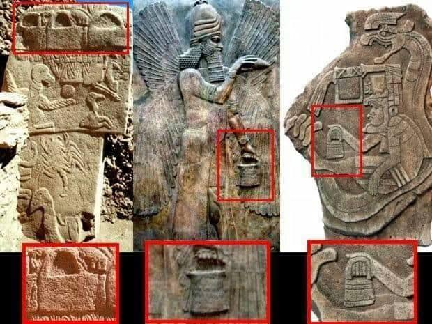
Some see the bag as a “container of knowledge or energy,” a hidden symbol of an advanced civilization.
These bags are found in a variety of civilizations, and some consider them to be buckets for purification. These inscriptions and tools were mentioned in ancient civilizations (such as the Assyrians), and symbols and rituals were documented in writing. Buckets seen in temples were called banduddu and were used as mulilu, meaning water carriers for religious purification.So yea, no mysterious devices, just buckets for purification rituals in temples. Which makes perfect sense in these carvings. When viewed as a whole, these Apkallu are shown in a ritual context either with the King or a motiv commonly referred to as the tree of life. They are blessing the ruler with purifing water.and they've even found some little ceremonial bronze buckets in temples that look a lot like these.
The Scorpion
Scorpions are timelessly strange creatures with key roles in mythology, medicine and magic. For millennia scorpion images are used to express human experiences of danger, pain, and desire. Although an arachnid of forbidding underworlds, the scorpion can also be a guardian and counter to baleful forces. Its presence in the context of the vulture stone imagery would therefore seem indicative that similar meanings were applied to this creature during the PPNA. The scorpion has also enjoyed a long career in astronomy. Scorpius is amongst the earliest recorded constellations and features in zodiacs and mythologies based on celestial movement.
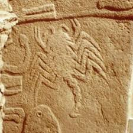
In Greek mythology the hunter Orion was stung to death by a monstrous scorpion. Thereafter he became the constellation of the same name in the opposite side of the sky to Scorpius to evade its venom. The Egyptian Osiris was also killed by a scorpion sent to him over the hottest part of the summer by his brother the god Set. The Barasana, an Amazonian hunter-gatherer people, possess a similar version. For them, Orion was sent to the sky after suffering snakebite by a reptile corresponding to Scorpius. The same stellar polarity was known in ancient Peru.
In some myths, it is said that if a scorpion is surrounded by fire, it will sting itself to death, thus becoming a symbol of self-annihilation or punishment.
The scorpion is interpreted in civilizations in several ways, the most important of which is death or its association with protection from magic and evil. It was also used in the civilizations of Mesopotamia as gatekeepers, and it was used in the civilizations of America as a symbol of the transition between life and death.
The fox
Some archaeologists (such as Klaus Schmidt, the site's discoverer) believe that the fox represented the "spirit animal" of a clan or group, i.e. a tribal/group identity symbol.
Other researchers believe that the fox symbolized survival in the harshness of nature. Being a cunning, nocturnal survivor, it was associated with the ability to adapt to harsh environments.
Some archaeoastronomy researchers believe that the fox at Göbekli Tepe may refer to a specific celestial constellation, perhaps close to Capricorn or another constellation associated with winter. This hypothesis is similar to the interpretation of the "scorpion" there, which has been interpreted as the astrological sign Scorpio.
Since the fox in ancient cultures is often a symbol of cunning and deceit, there is an opinion that in Göbekli Tepe it may have been a symbol of hidden power or the "unseen enemy" in rituals.
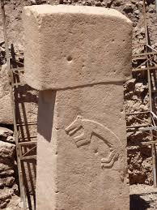
Some metaphysical interpretations consider that the fox was used as a symbol in a ritual of passage between life and death (similar to the role of the jackal/Anubis in Egypt). That is, it may have been a guardian of the afterlife.
skulls and bones
Before any burials were found, Schmidt speculated that graves could have been located in niches behind the walls of the circular building.In 2017, fragments of human crania with incisions were discovered at the site, interpreted as a manifestation of the widespread Neolithic skull cult. Special preparation of human crania in the form of plastered human skulls is known from the Pre-Pottery Neolithic period at Levantine sites such as Tell es-Sultan (also known as Jericho), Tell Aswad, and Yiftahel, and later in Anatolia at Çatalhöyük
Most of the skulls and bones found were fragmented or modified after death. No complete graves were discovered, indicating that the site was not an ordinary cemetery.
Some studies (such as those conducted by anthropologists in Türkiye) suggest that the skulls may be associated with secondary burial rituals.
Scholars associate the presence of skulls with spiritual or funerary rituals, which may represent spirits or ancestors. Some columns bear carvings of animals (such as vultures or scorpions) and may be associated with these skulls.
Some alternative researchers believe that the skulls were part of a secret knowledge ritual or a storage of spiritual energy.
There are myths that the site was a center for spirit ceremonies or communication with other worlds, and that skulls played a ritual role in this.
Lettre
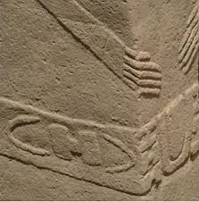
Hancock reported seeing two symbols on one of these belts that resembled the letters H and C. He considered these symbols to be more than just decoration, but rather meaningful signs, perhaps a reference to a "symbolic language" or even the code of a lost civilization. Some of his followers associated the letters with Latin (H and C), or considered them astronomical symbols (e.g., H = Orion / C = crescent or moon).
Traditional archaeologists (including Klaus Schmidt) have explained these symbols as abstract decorative forms or ritual patterns unrelated to an alphabet.
snakes
Are the snakes carved on the pillars at Göbekli Tepe meant to symbolize the visionary effects of psychotropic (mind-altering) or soporific (sleep inducing) drugs? It seems likely, for as Schmidt writes himself, several large basalt bowls found at the site were perhaps used in the preparation of medicines or drugs
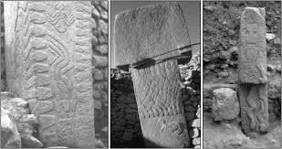
Visionary snakes are the most common creatures glimpsed by shamans and initiates during ecstatic or altered states of consciousness induced by mind-altering substances, which among the indigenous peoples of the Amazonian rainforest is most commonly the sacred brew called yagé or ayahuasca, known as the “vine of the soul.” These serpentine creatures are seen as the active spirit of the drug and can even communicate with the shaman or initiate
Lion
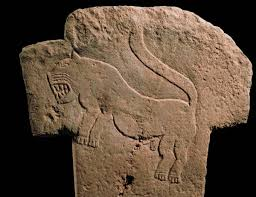
In some traditions, the lion statue is found at the summit of Mount Bingöl, and there is the sacred lion of Ali to the Alevis and Yarsans. The questions here are: Does this lion carved on the side of the Göbekli Pillar symbolize the universe, the guardian of the world pillar and the guardian of cosmic time, like the lion-headed cosmic being called Zurvan Akarana in the branch of Zoroastrianism known as Zurvanism? Or is it another form of the cosmic trickster, a creation of Ahriman, the Dark Principle in Zoroastrianism, just like the wolf and the fox? In ancient Egypt, the goddess Hathor, disguised as the lioness-headed Sekhmet, rained fire on the earth and nearly destroyed humanity when the sun god Ra deemed humanity to have become "too old," perhaps in remembrance of the horrific devastation that accompanied the impact of the Smaller Dryas comet in 10,900 BC. Was this same lion-like destroyer depicted on the newly discovered column at Göbekli Tepe, or was it simply a creature that entered the sky, perhaps a prototype of the Mesopotamian sky leopard MULUD.KA.DUH.A, composed of stars belonging to the Cygnus constellation and the neighboring constellation Aphrodite? It is too early to say, especially since each new column or window stone discovered raises more questions about this extraordinary place.
Research
On Easter Island, there is a statue that closely resembles the Man with an Erect Penis. Apart from its massive size—the visible portion, sloping steeply to the left, extends more than four meters (13 feet) above the ground—it is the position of its arms and hands. They are arranged exactly in the manner of Easter Island motifs, as well as of Göbekli Tepe figures, with the arms slanted to the sides and the hands converging across the front of the abdomen, with the fingers rounded. The big difference is that this statue, known locally as Watu Balindu, “Wise Man,” displays an erect penis and a pair of testicles between those outstretched fingers.
The sophisticated architectural design, intricate carvings, and symbolic representations found at Gobekli Tepe suggest a highly organized and a ritualistic community. This site has reshaped our understanding of the development of civilization and redefined the perception of human achievements during the Stone Age.
Archaeologists used advanced LiDAR technology to map the area, revealing extensive foundations and complex layouts suggestive of large temple complexes and monumental buildings. Initial excavations have unearthed a range of artifacts, including intricately carved stone tools and what appear to be ancient technological devices, indicating a sophisticated Neolithic society.
The size of the structures has led some researchers to suggest the existence of an ancient global civilization, possibly inhabited by individuals of extraordinary stature. This has sparked speculative associations with the Nephilim, a mythical group mentioned in ancient texts and myths who are often described as giants.
Archaeologists were able to identify four large megalithic circles of diameter between 10 and 30 meters; each circle is made by imposing limestone pillars T-shaped with exceptional bas-reliefs of animals of each type. Under these impressive images you can distinguish much smaller bas-reliefs with animal subjects side by side with archaic symbols. What upsets is dating obtained by radiocarbon analysis of animal bones found in the various layers; The site dates back to around 12,000 years ago (Neolithic Preceramic)
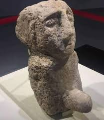
Just a handful of the giant circular and oval rooms at Gobekli Tepe have been excavated so far, but surveys show many more are still buried underground at the site. Each of these round rooms is defined by a ring of hulking T-shaped pillars.
In 1986, a farmer made an extraordinary discovery while plowing his field on the site of Göbeklitepe today. A stone statue of an ithyphallic figure emerged from the earth, one of the oldest artistic testimonies of humanity. The landowner Şavak Yıldız did not know what to do: he was afraid that if he left it there it would be lost, but he was also afraid of being laughed at if he took it to the village. In the end, he decided to load it onto a horse-drawn carriage and deliver it to the Şanlıurfa Archaeological Museum
Unfortunately, the statue was ignored and remained in storage for years. Only with the start of excavations at Göbeklitepe in 1995 was its historical value finally recognized. It is estimated to be 11,600 years old, making it one of the oldest testimonies of human history
Australian Aboriginal symbols found on mysterious 12,000 year old pillar in Turkey. Göbekli Tepe has been one of the most puzzling sites known to us and now it gets even more confusing. A connection to the symbol carved on a column at Göbekli Tepe, Turkey, by a completely unknown ancient culture and an Australian Aboriginal medicine man, with the same symbol on his chest.
Dr. Giulio Magli, Professor of Mathematical Physics at the Politecnico di Milano, is a leading Italian astrophysicist who has conducted archaeoastronomical studies of a number of ancient sites and monuments around the world. In 2013 he published a research paper on Göbekli Tepe based on precise computer simulations of changes in the sky brought about over long periods by precession34— . It is Magli’s case that Sirius, the star the Ancient Egyptians identified with the goddess Isis, was an object of particular interest to the builders of Göbekli Tepe:"Simulating the sky in the tenth millenium BC, it is possible to see that a quite spectacular phenomenon occurred at Göbekli Tepe in that period: the “birth” of a “new” star, and certainly not of an ordinary one, as it is the brightest star and the fourth most brilliant object of the sky: Sirius. Indeed precession, at the latitude of Göbekli Tepe, brought Sirius under the horizon in the years around 15,000 BC. After reaching the minimum, Sirius started to come closer to the horizon and it became visible again, very low and close to due south, toward 9300 BC"
Professor Robert Schoch of Boston University, though not an astronomer, also detected astronomical alignments at Göbekli Tepe, and in the same region of the sky highlighted by Magli. However, Schoch came to a different conclusion about what stellar objects might have interested the builders. “This is a difficult question to answer,” he wrote, before going on to offer the following hypothesis: On the morning of the Vernal Equinox of circa 10,000 BCE, before the sun rose due east at Göbekli Tepe, the Pleiades, Taurus, and the top of Orion were in view in the direction indicated by the central stones of Enclosure D, with Orion’s belt not far above the horizon as dawn broke (as seen from the best vantage points in the area). A similar scenario played out for the orientation of the central stones of Enclosure C in circa 9500 BCE and for Enclosure B in circa 9000 BCE. Enclosure A is oriented toward the Pleiades, Taurus, and Orion on the morning of the Vernal Equinox circa 8500 BCE, but due to precessional changes, the entire belt of Orion no longer rose above the horizon before dawn broke. By about 8150 BCE the belt of Orion remained below the horizon at dawn on the morning of the Vernal Equinox. These dates fit well the timeframe established for Göbekli Tepe on the basis of radiocarbon dating.
Graham Hancock believes that Göbekli Tepe is evidence of a lost advanced civilization that existed more than 12,000 years ago, before the end of the Ice Age. He connects the site with myths such as Atlantis and pre-flood civilizations, arguing that the animal and astronomical carvings are not mere decorations but signs of advanced knowledge of astronomy and records of major cosmic events. In this view, Göbekli Tepe stands as a surviving trace of a forgotten civilization that inspired global myths of floods and sunken cities.The inscriptions on the columns, such as images of scorpions, birds, and various animals, Hancock believes are not merely ritual decorations, but rather deliberate astronomical symbols recording cosmic events or specific stellar positions. He suggests that the inhabitants of Göbekli Tepe possessed advanced astronomical knowledge and used these symbols to document major celestial events, perhaps linked to the end of the Ice Age.
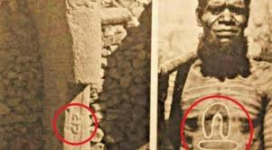
Graham states that what has been uncovered at Göbekli Tepe is only the "tip of the iceberg." The site includes dozens of unexcavated mounds, and it is believed that only 5–10% of the entire site has been uncovered so far. He points out that geophysical surveys (Ground Penetrating Radar) have revealed the presence of additional stone circles buried beneath the soil that have not yet been uncovered.
Klaus Schmidt himself was very cautious, saying that a complete excavation might take a century or more, and that what we see today is only a small part of the larger buried city/temple.
This is why the mysterious decision by the builders of Göbekli Tepe to bury the megalithic enclosures there has been so helpful to archaeology. Once buried they stayed buried and organic materials in the fill can thus be used to make valuable inferences about their age. In many other sites, by contrast, there is the possibility that the intrusion of later organic materials will give a falsely young date, and in some—the underground cities of Turkey being a prime example—no reliable dating can be done. This is because the sites were used, reused and indeed repurposed many times down the ages by many different peoples, with organic materials being introduced on every occasion, thus making it impossible to draw any inferences about the epoch of their original construction.